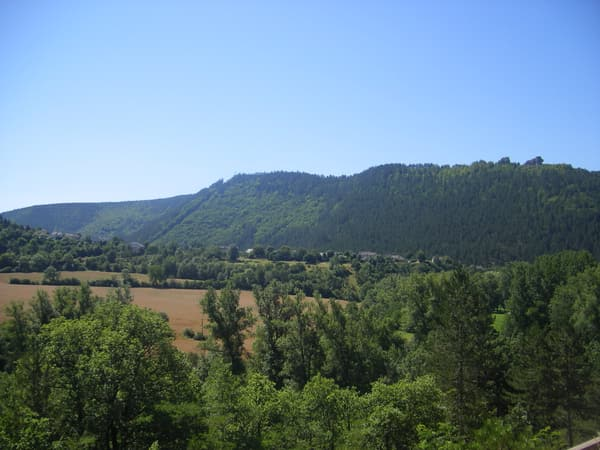
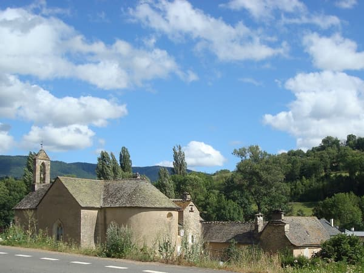
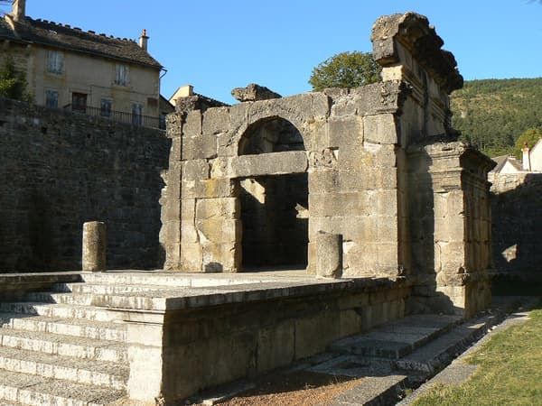
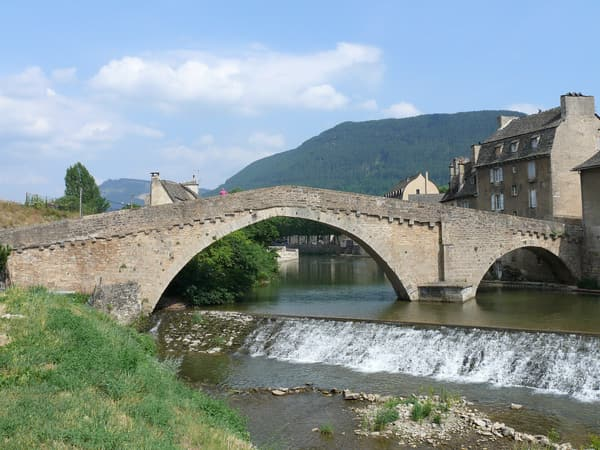
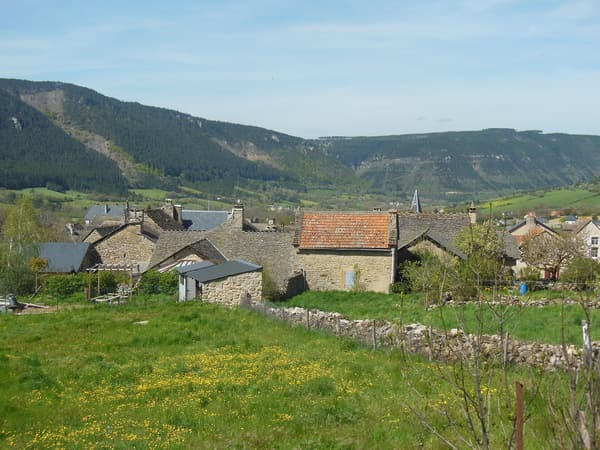

Isabelle Buisson
Infirmière libérale diplômée d’État
Soins infirmiers à domicile, sur rendez-vous, dans le secteur du Valdonnez : Saint-Bauzile, Balsièges, Brenoux, Lanuéjols…
Tous les jours, de 7 h à 19 h · N° RPPS 10106230922
Les soins à domicile
Le secteur du Valdonnez
Je me déplace sur tout le secteur du Valdonnez.
-
-

-

-

-

-

Prendre rendez-vous
Pour prendre rendez-vous, vous pouvez m’appeler directement, ou bien prendre rendez-vous en ligne. Dans ce cas, vous pouvez choisir un créneau disponible pour un prélèvement sanguin, un pansement simple, un retrait de points ou d’agrafes (moins de 10) ou une vaccination (patient de plus de 11 ans).
Pour les autres soins, n’hésitez pas à remplir le formulaire de contact et je vous rappellerai au plus tôt pour fixer, avec vous, un rendez-vous.
En ligne
Version de démonstration : le formulaire n’est pas encore relié à l’agenda. Aucune demande n’est envoyée.
Infos pratiques
- Quels sont mes horaires ?
- Tous les jours, de 7 h à 19 h. En ligne, vous pouvez réserver à tout moment un rendez-vous du lundi au vendredi, sur les horaires proposés dans le formulaire. Pour un autre horaire ou le week-end, appelez-moi ou envoyez une demande.
- Faut-il une ordonnance ?
- Oui, pour la plupart des soins. Gardez-la à portée de main.
- Que préparer pour une prise de sang ?
- L’ordonnance, votre carte Vitale, votre carte de mutuelle et, si le laboratoire vous les a remis, le kit ou les étiquettes. Restez à jeun si l’ordonnance le précise ou en cas de doute.
- Vous êtes deux à soigner ?
- Prenez un rendez-vous pour chaque personne.
- Comment mon rendez-vous est-il confirmé ?
- Je confirme chaque demande par e-mail ou par téléphone. Si vous avez donné votre e-mail, vous recevez aussi un rappel la veille.
- Jusqu’à quand réserver un soin ?
- Jusqu’à la veille, 18 h. Passé cette heure, appelez-moi pour le lendemain.
- Aucun créneau ne vous convient ?
- D’autres horaires sont possibles : appelez-moi ou envoyez une demande en ligne.
- Annuler ou déplacer un rendez-vous ?
- Appelez-moi au 07 72 19 85 91.
- En cas d’urgence ?
- Appelez le 15, ou le 112 depuis un portable.